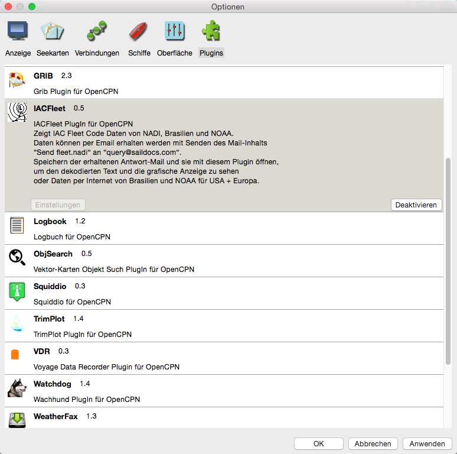
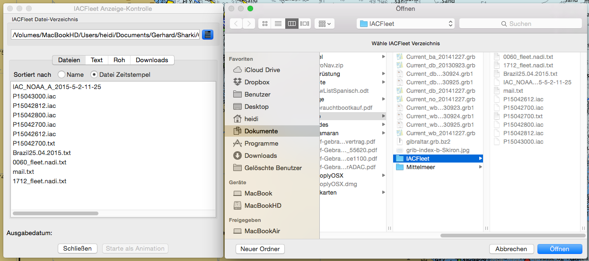
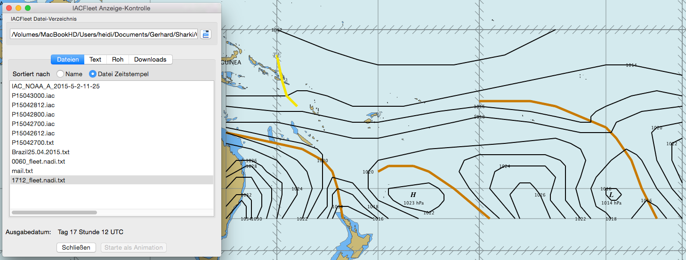
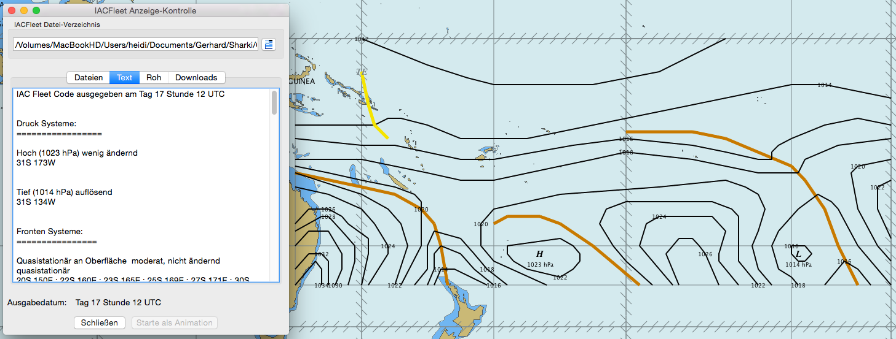
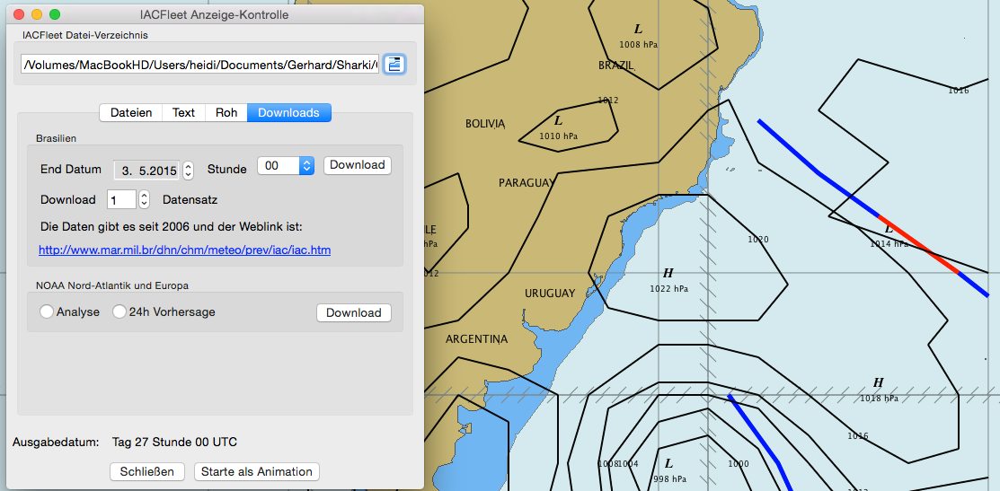

IAC-Fleet Plugin
IAC steht für International Analysis Code - auch Fleetcode genannt -, mit dem Wetterbodenanalysen codiert sind, ähnlich wie bei Grib-Dateien. Dieses Plugin kann somit diese Daten decodieren und anzeigen. Im Moment sind nur die IACFleet Daten von Nadi - einem Wetterdienst auf Fidji für den Pazifik -, Brasilien und NOAA für Nord-Atlantik bekannt.
Die für unsere nördlichen Breiten von der NOOA erhältlichen IAC Daten (hier ein
Beispiel) können auch mit zyGrib decodiert und angesehen werden. zyGrib kann wiederum nicht die Daten von Nadi anzeigen. Insofern hat der Programmierer Carsten
Borchardt - unterwegs mit seiner 32-Fuß Westerly Fulmar SY "Forty-Two" - eine Lücke geschlossen, vielen Dank.
Weitere bekannte Quelle für IAC Daten ist Brasilien: http://www.mar.mil.br/dhn/chm/meteo/prev/iac/P15042500.iac
Die erhaltenen Daten in eine Textdatei speichern und wie bei Nadi in ein Verzeichnis kopieren.
Das Plugin wird wie üblich in den Einstellungen unter der Lasche Plugins aktiviert. Es hat dort noch keinen (also einen inaktiven) Button für Einstellungen.

Wie schon bei dem Grib Plugin unter "Was ist eine Grib-Datei?" hingewiesen, bekommt man auch die IACFleet NADI Daten mit einer eMail an saildocs. Im Text der Mail steht
nur "send fleet.nadi", ohne Hochkomma. Die Antwort-Mail von saildocs wird in ein beliebiges Verzeichnis kopiert. Klickt man jetzt einmal auf das IACFleet Symbol auf der
Werkzeugleiste von OpenCPN, dann öffnet sich das zunächst noch leere Fenster links im Bild unten "IACFleet Anzeige-Kontrolle".
Die Daten von Brasilien und NOAA erhält man über die Lasche Downloads.

Im "IACFleet Anzeige-Kontrolle" Fenster wird mit dem Symbol rechts von der ersten Zeile der Dialog zur Ordner-Auswahl aufgerufen (rechtes Fenster im Bild oben) und damit das Verzeichnis gewählt, in das die Antwort-Mails und Daten kopiert wurden. Diese erscheinen dann als Liste im Fenster links.

Die jeweils dort angewählten Daten werden dekodiert und die Daten mit den Isobaren werden in OpenCPN bei diesem Gebiet angezeigt. Wird der Button "Text" markiert, dann werden die Daten der vorher gewählten Daten auch im Klartext im Listen-Fenster angezeigt:

Werden mehrere (üblicherweise zeitlich zusammenhängende) Dateien ausgewählt, werden die Daten auch als Animation auf der Karte geplottet. Im oberen Teil unter der Downloads Lasche werden brasilienische (00 Uhr oder 12 Uhr) und unten die NOAA Daten (Analyse oder 24h Vorhersage) herunter geladen.
